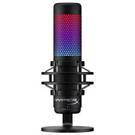
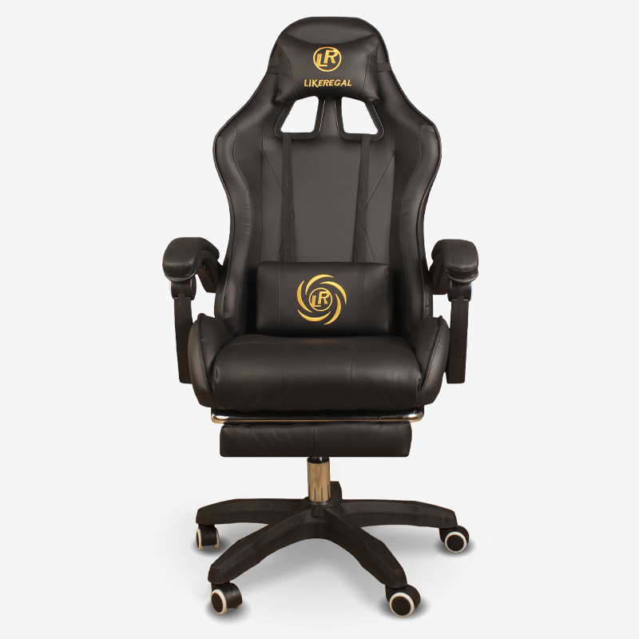
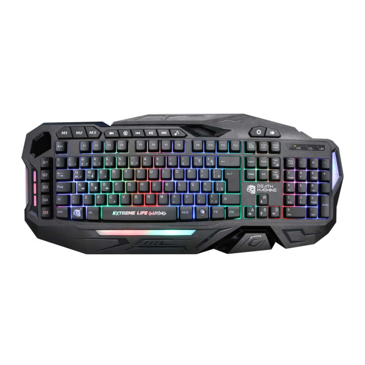
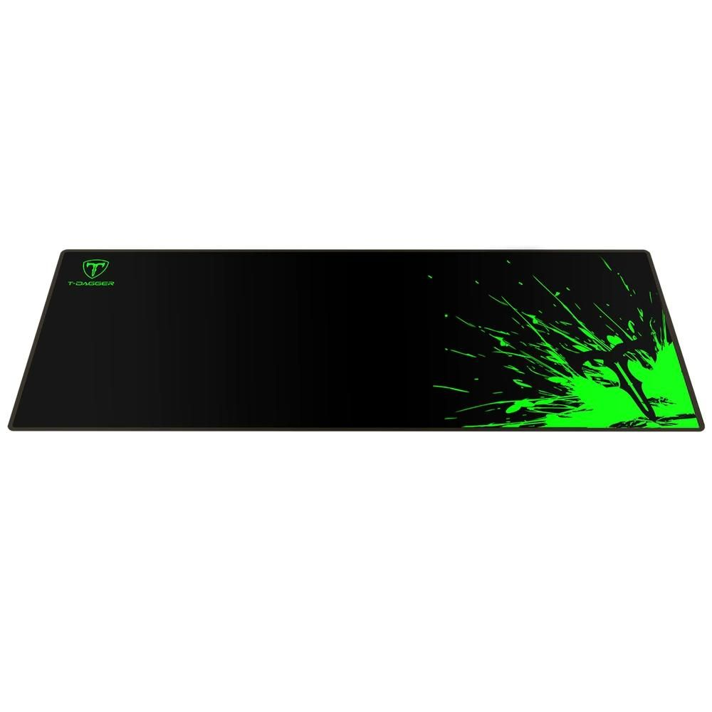
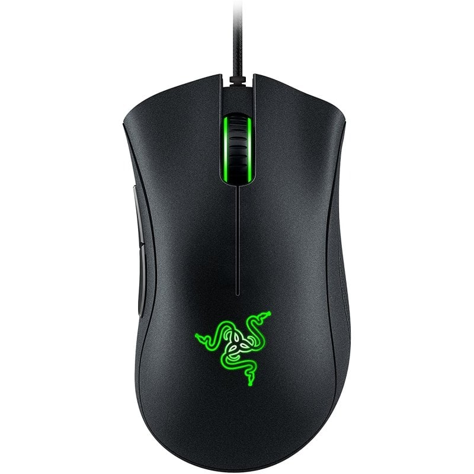
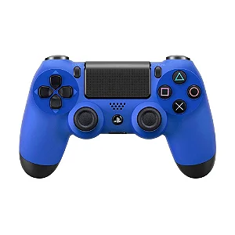
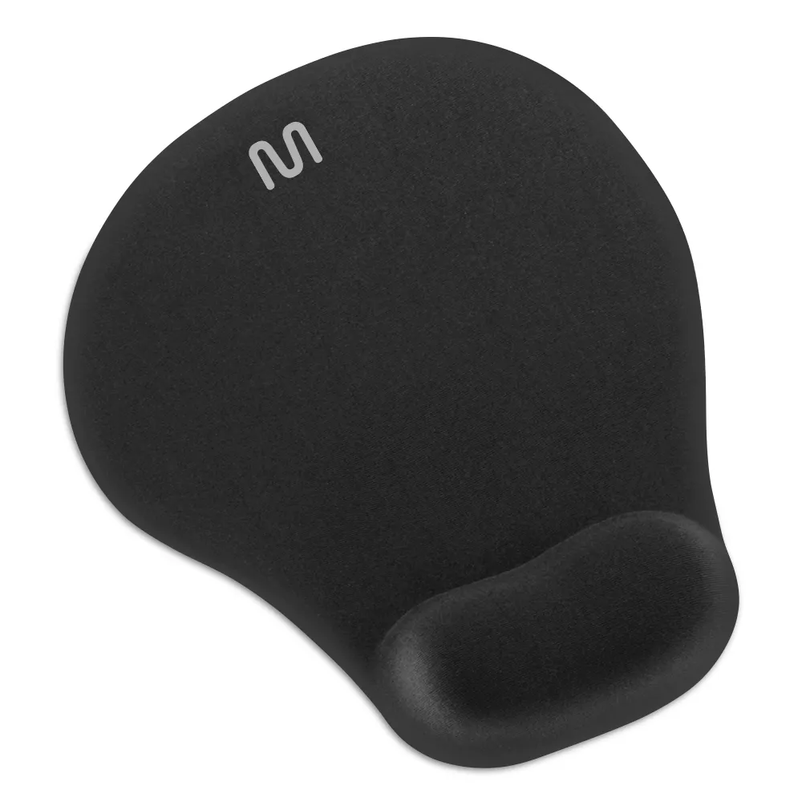
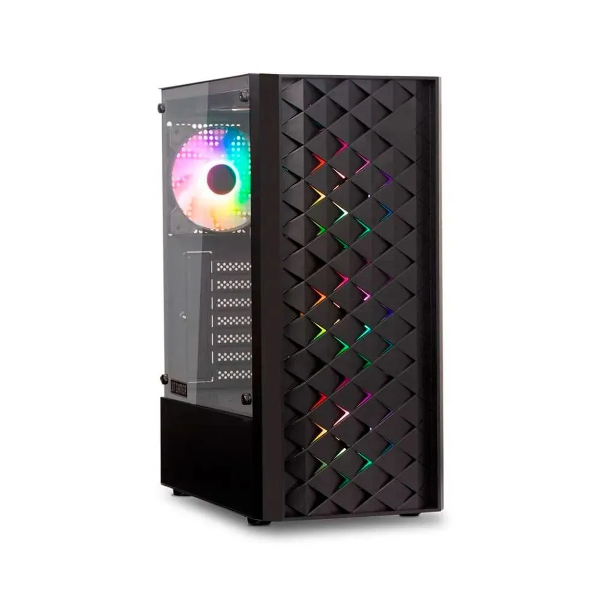
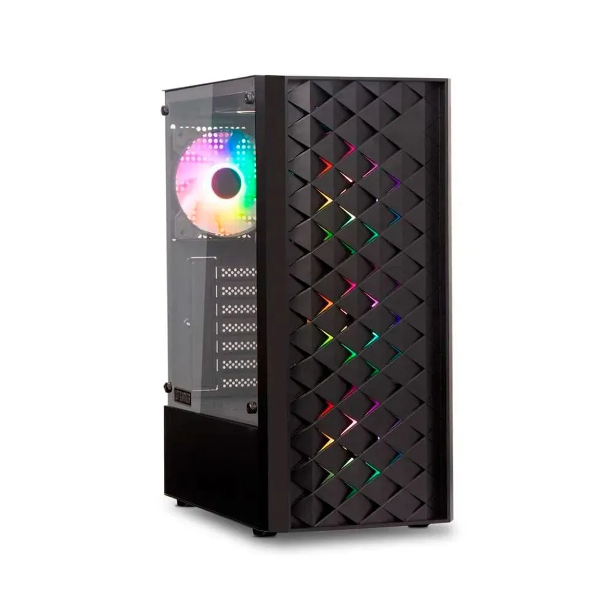

Bem-vindo à K-Games Store, o lugar perfeito para os verdadeiros apaixonados por games! Aqui, você encontra tudo o que precisa para turbinar sua experiência gamer: desde os lançamentos mais esperados até acessórios e colecionáveis exclusivos. Nossa missão é oferecer os melhores produtos com preços incríveis, para que você viva a emoção dos jogos como nunca antes. Explore nossas ofertas, fique por dentro das novidades e descubra um novo nível de diversão!
Nossos Produtos
       


A K-Games Store começou de uma ideia simples, mas poderosa: criar um lugar onde os gamers pudessem encontrar tudo o que precisavam em um só lugar. Como um apaixonado por videogames, eu percebi que não existia uma loja que oferecesse a combinação perfeita de produtos, atendimento e uma verdadeira conexão com a comunidade gamer. Foi assim que decidi começar minha própria jornada.
Sozinho, com muita determinação e o desejo de transformar essa paixão em algo real, comecei a loja. Comecei de maneira simples, oferecendo apenas alguns jogos e acessórios. O objetivo era claro: proporcionar aos gamers uma experiência de compra mais pessoal e confiável. Aos poucos, a loja foi crescendo, trazendo novos produtos e conquistando clientes que compartilhavam a mesma paixão que eu.
Hoje, a K-Games Store é muito mais do que uma loja online. É um lugar onde os gamers se sentem em casa, podem encontrar tudo o que precisam e contar com um atendimento dedicado. Tudo começou com um sonho, e agora é uma realidade que continua a crescer a cada dia.
Depoimentos

"Comprei meu setup gamer na K-Games Store e não poderia estar mais satisfeito! Atendimento excelente, entrega rápida e produtos de alta qualidade. Super recomendo!"
João Silva

"Achei os melhores acessórios para meu PC gamer aqui! O teclado mecânico que comprei é incrível e tem um ótimo custo-benefício. Voltarei a comprar com certeza!"
Ana Souza

"Sempre fui um grande fã de games, e encontrar uma loja com tanta variedade foi incrível! A K-Games Store tem tudo o que um gamer precisa, com produtos de qualidade e um atendimento super atencioso. A experiência de compra foi fácil e rápida, e com certeza voltarei a comprar aqui. Nota 10!"